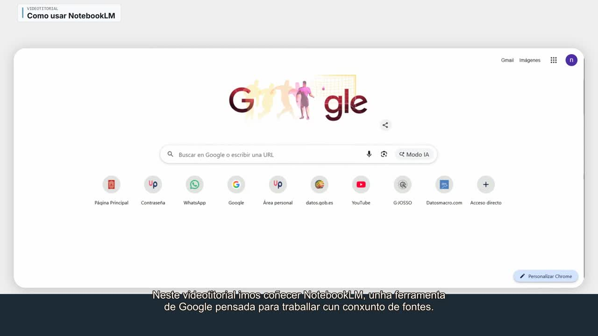
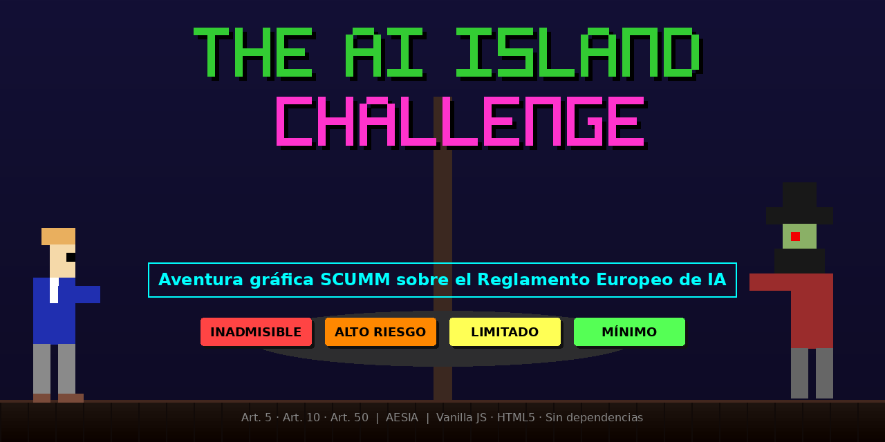

Diseño formativo
Objetivos, progresión, destinatarios, modalidad, actividades y sistema de evaluación.
Formación en IA para el sector público
Diseño e imparto programas con contenidos propios, práctica guiada y evaluación adaptada a perfiles administrativos, técnicos, jurídicos y directivos.



Capacidades
La formación se construye desde las necesidades del alumnado y termina en tareas, decisiones y evidencias que pueden evaluarse.
Objetivos, progresión, destinatarios, modalidad, actividades y sistema de evaluación.
Apuntes, vídeos, simuladores, cuestionarios, flashcards y aplicaciones educativas.
Acompañamiento de perfiles heterogéneos y transferencia del aprendizaje al puesto.
Experiencia acreditada
El caso permite revisar la estructura, las decisiones didácticas y una selección de materiales producidos.
Curso online de 30 horas para empleados públicos locales. Cinco módulos, diecinueve unidades, práctica con herramientas, gamificación y evaluación transversal.
Áreas formativas
Las áreas indican dónde puedo diseñar formación. No implican que exista un programa cerrado ni una duración única.
Base común, perfiles, riesgos y evidencias formativas.
Herramientas, tareas, instrucciones, fuentes y verificación.
Supervisión humana, privacidad, sesgos y límites de uso.
Aplicaciones sectoriales con trazabilidad y revisión profesional.
Inventario, clasificación, responsabilidades y documentación.
Evidencias, control algorítmico y decisiones de infraestructura.
Muestras seleccionadas
Una plataforma, un recurso gamificado y un vídeo vinculado a una práctica.

Plataforma educativa con contenidos, cuestionarios, flashcards y juegos sobre regulación de la IA.

Aventura gráfica para comprender los niveles de riesgo del Reglamento de IA mediante problemas y diálogo.
Videotutorial conectado con tareas de carga de fuentes, análisis, verificación y entrega de resultados.
Credenciales
La trayectoria completa, publicaciones, premios y proyectos pueden consultarse en la web personal.
Para preparar una propuesta basta con indicar destinatarios, objetivos, duración y modalidad. El programa se adapta a los resultados que la organización necesita obtener.